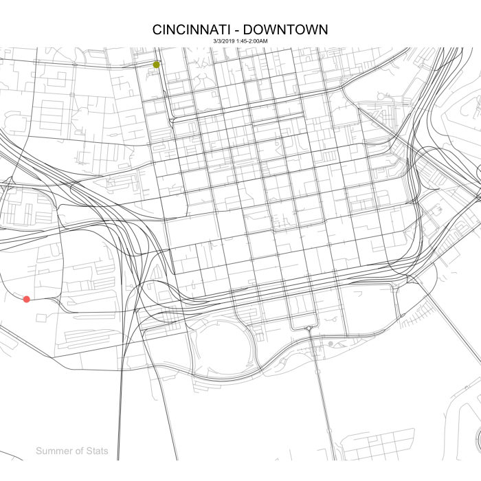

Telling compelling stories with data is what I love to do.
Below, I had some fun creating visuals using publicly available data from the City of Cincinnati Open Data Portal. I hope you enjoy!
City Vehicles
Using vehicle GPS data from city-owned vehicles (SOURCE DATA), this map tracks these assets as they move around downtown Cincinnati, using R and gganimate.
Single Vehicle

Multiple Vehicles

Adding a trace line for each vehicle reveals some very interesting patterns - we can clearly see police patrols criss-cross different sections of downtown.
These visuals are rendered as gifs, making them easy to embed into a web page or slide presentation.
Funding Changes to Non-Profits
By sifting through the city’s database of vendor payments (SOURCE DATA), we can track the shift in city priorities hidden within the city budget.
This graphic illustrates which local non-profits experienced the largest swings (up or down) in city funding each year:
2020

2021

2022

Food Safety Scorecard
The following dashboard makes use of Tableau’s geo-spatial capabilities to summarize Health Dept. food inspection results (SOURCE DATA) on local restaurants.
Here, you can see past inspection results for any location over the last 4 years, as well as any open violations that restaurant may have.
(Note: you may want to check this out before deciding whether to try a new restaurant or not!)
Property Tax Abatements
Below is a summary of Property Tax Abatements (SOURCE DATA) in the Cincinnati area, prior to the program’s overhaul in 2023.

East v. West side designations are admittedly open to some debate (I used Vine Street as a rough dividing line). But, what is clear is the stark imbalance in abatement $ awarded to each half of the city.
See Also:
For more examples, please check out my posts on Summer of Stats.
Other Projects
I am also the author of Python package OCRfixr, a machine-learning powered spellchecker for OCR text.
OCRfixr makes use of a BERT language model to double-check spellcheck suggestions. This context-aware approach reduces the number of “bad” suggestions the user encounters.